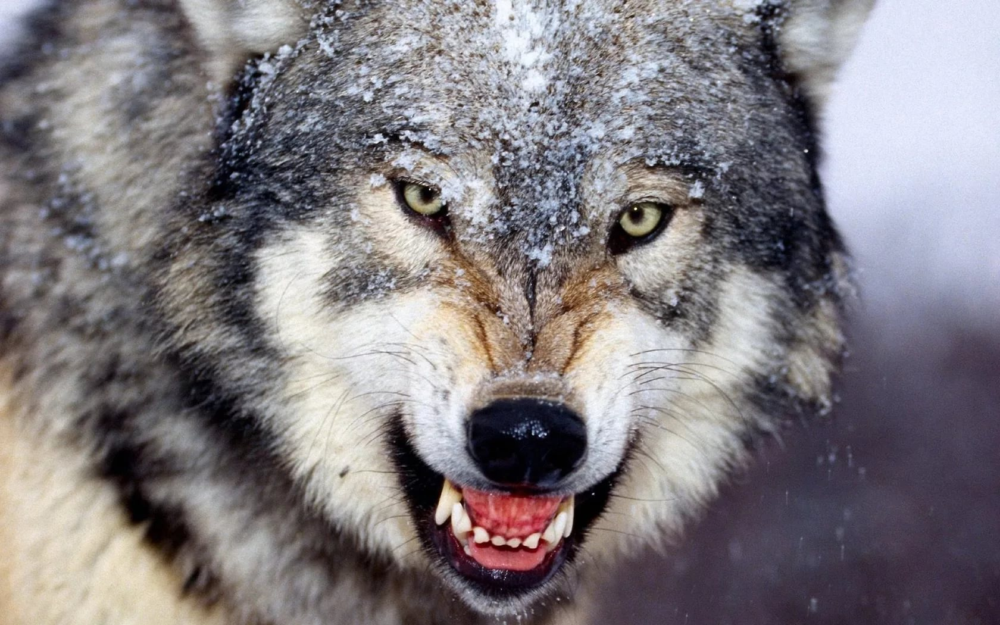
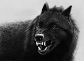

волки
Волк, или серый волк, или обыкнове?нный волк — вид хищных млекопитающих из семейства псовых. Наряду с койотом, обыкновенным шакалом и ещё несколькими видами составляет род волков главная страница 
